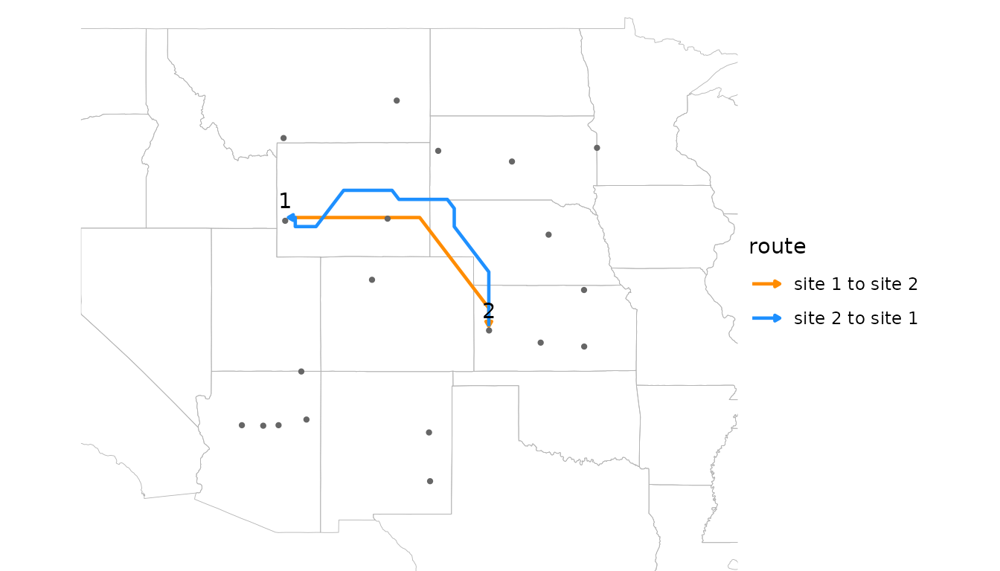
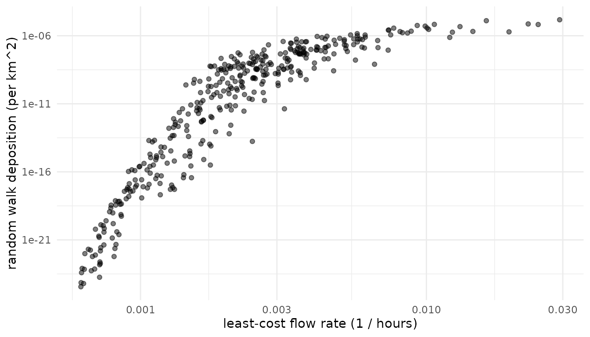

Pairwise connectivity
pairwise.RmdMany ecological questions about wind concern a set of sites rather than a single one. Does wind explain gene flow or genetic differentiation among populations? Do pathogens or pests spread along the routes wind favors? Are communities more similar where wind links them strongly? Each of these compares a pairwise matrix of wind connectivity among sites with a pairwise matrix of ecological data.
This article covers estimating pairwise wind connectivity with
windscape’s two connectivity models, placing sites on the wind grid, and
testing hypotheses about the role of wind with Mantel tests. It uses
model settings such as half_life without explaining them in
depth; the connectivity models
article covers how the models work and how to choose their settings. It
ends with a worked example using birch, a landscape genetic
data set that ships with the package.
library(windscape)
library(ggplot2)
rose <- windscape_example("wind_rose")
states <- map_data("state")
borders <- geom_path(data = states, aes(long, lat, group = group),
color = "gray70", linewidth = 0.15, inherit.aes = FALSE)
us <- coord_quickmap(xlim = c(-120, -90), ylim = c(30, 50), expand = FALSE)We’ll use twenty random sites across the example rose’s domain:
Least-cost connectivity
pairwise_least_cost() returns a matrix of least-cost
wind travel times between every pair of sites, in hours (for a rose
built with trans = 1 from winds in m/s):
hours <- pairwise_least_cost(rose, sites)
round(hours[1:5, 1:5])
#> [,1] [,2] [,3] [,4] [,5]
#> [1,] 0 287 184 807 526
#> [2,] 1063 0 312 1178 330
#> [3,] 879 307 0 1342 467
#> [4,] 605 285 521 0 480
#> [5,] 1221 364 394 1498 0Element [i, j] is the travel time from site
i to site j, so row i describes
travel downwind from site i, and column j
describes travel upwind to site j. That’s why, unlike
least_cost(), this function has no direction
argument: the matrix covers both. Because wind is directional, the
matrix is asymmetric. Wind takes about 287 hours to carry material from
site 1, in southwestern Wyoming, to site 2, in Kansas, but about 1063
hours to carry it back. least_cost_paths() shows the two
routes:
routes <- rbind(data.frame(least_cost_paths(rose, sites[1, , drop = FALSE], sites[2, , drop = FALSE]),
route = "site 1 to site 2"),
data.frame(least_cost_paths(rose, sites[2, , drop = FALSE], sites[1, , drop = FALSE]),
route = "site 2 to site 1"))
routes$trail <- as.integer(factor(routes$route))
ggplot(routes, aes(x, y)) +
borders +
geom_wind_path(aes(color = route), linewidth = 0.8) +
annotate("point", sites[, 1], sites[, 2], size = 0.8, color = "gray40") +
annotate("text", sites[1:2, 1], sites[1:2, 2], label = 1:2, vjust = -0.8) +
scale_color_manual(values = c("darkorange", "dodgerblue")) +
us + theme_void()
Travel times are a measure of accessibility, small for well-connected
pairs. rate = TRUE returns their inverse, a flow rate,
which is large for well-connected pairs, matching the orientation of
random walk connectivity.
Random walk connectivity
pairwise_random_walk() estimates connectivity with a
stream-mode random walk released from each site in turn. By default,
element [i, j] is the probability density (per km^2) that a
particle released at site i is deposited at site
j:
deposition <- pairwise_random_walk(rose, sites, half_life = 48)
signif(deposition[1:5, 1:5], 2)
#> [,1] [,2] [,3] [,4] [,5]
#> [1,] 5.1e-05 5.9e-08 1.1e-06 4.3e-16 3.6e-11
#> [2,] 3.9e-18 4.7e-05 2.3e-08 4.1e-19 1.5e-09
#> [3,] 1.1e-15 2.2e-08 5.9e-05 3.7e-21 3.2e-11
#> [4,] 1.7e-11 5.7e-07 3.0e-09 6.2e-05 1.3e-10
#> [5,] 3.6e-19 3.4e-09 4.0e-09 1.8e-22 3.4e-05A half-life is required, since without it nothing is deposited.
value = "residence" instead gives the time particles from
site i spend airborne over site j, which works
without deposition. Values are per km^2 of the destination’s grid cell
(density = TRUE), because a larger cell catches more of the
particles passing over it; on a longitude/latitude grid, cell area
shrinks toward the poles, so per-cell values would favor low-latitude
destinations.
The diagonal holds each site’s self-connectivity: its own release deposited in its own cell. It’s usually far larger than the other values, and the tests below ignore it.
Deposition spans many orders of magnitude, from relatively large values for close downwind neighbors to vanishingly small ones for distant upwind neighbors, so it’s usually analyzed on a log scale.
Comparing the models
The two models measure different things: the speed of the best route, versus the share of material that arrives along all routes, net of deposition on the way. Plotting one against the other shows how they relate for these sites:
off <- row(hours) != col(hours) # pairs of distinct sites
d <- data.frame(rate = 1 / hours[off], deposition = deposition[off])
ggplot(d, aes(rate, deposition)) +
geom_point(alpha = 0.5) +
scale_x_log10() + scale_y_log10() +
labs(x = "least-cost flow rate (1 / hours)", y = "random walk deposition (per km^2)") +
theme_minimal()
cor(d$rate, d$deposition, method = "spearman")
#> [1] 0.9456101The models largely agree on which pairs are well connected, but not on how connectivity scales. Among poorly connected pairs, random walk connectivity falls off far faster than flow rate, so it concentrates on near, downwind neighbors. Reaching a distant upwind site requires material to spread against or across the prevailing wind, which becomes exponentially unlikely with distance, while a least-cost route can always wait out the wind. Deposition along the way adds to this, but only modestly: a longer half-life flattens the curve only slightly. The models also diverge where the fastest route is narrow or roundabout, so that little material actually follows it.
Least-cost connectivity suits questions about accessibility, and handles sites that are close together (see below). Random walk connectivity suits questions about how much material is exchanged, such as dispersal or gene flow, especially when deposition along the way matters. Where the choice isn’t clear, testing both is informative.
Placing sites on the grid
Both models work on the wind rose’s grid, but they place sites on it differently, which matters when sites are only a few grid cells apart.
pairwise_least_cost() places sites at their actual
locations. It adds each site to the wind graph as a node of its own,
linked to the centers of nearby grid cells, and to other nearby sites,
by travel times computed exactly for the local wind. It therefore
distinguishes sites that are close together, even within the same grid
cell. With snap = TRUE, sites are instead moved to the
centers of their cells, as in other least-cost tools. Here are three
sites, the first two in the same grid cell:
near <- cbind(c(-104.95, -104.75, -104.3), c(40.1, 40.25, 40.15))
terra::cellFromXY(rose, near)
#> [1] 3025 3025 3027
round(pairwise_least_cost(rose, near), 1)
#> [,1] [,2] [,3]
#> [1,] 0.0 16.0 19.6
#> [2,] 27.8 0.0 17.9
#> [3,] 86.6 71.5 0.0
round(pairwise_least_cost(rose, near, snap = TRUE), 1)
#> [,1] [,2] [,3]
#> [1,] 0.0 0.0 14.9
#> [2,] 0.0 0.0 14.9
#> [3,] 88.7 88.7 0.0Snapped, the first two sites are zero hours apart, with identical travel times to and from the third site. Placed at their actual locations, they get distinct travel times, which change smoothly as sites move.
A random walk moves particles from cell to cell, so
pairwise_random_walk() treats each site as its grid cell:
sites in the same cell get identical rows and columns, and the distances
and directions among sites a few cells apart are distorted.
check_cell_distance() reports how much the grid distorts
the distances among a set of sites:
check_cell_distance(rose, sites)
#> Total point pairs: 190
#> Point pairs in the same grid cell: 0 (0%)
#> Distribution of cell-point distance discrepancies:
#> 0--1%: 90 (47.4%)
#> 1--2.5%: 66 (34.7%)
#> 2.5--5%: 21 (11.1%)
#> 5--10%: 10 (5.26%)
#> 10--25%: 2 (1.05%)
#> 25--Inf%: 1 (0.526%)None of the twenty sites share a cell, and most discrepancies are a
few percent, so this grid suits them. Where many pairs are affected, a
finer grid separates nearby sites, from finer wind data or from
downscale(), which interpolates a wind rose onto a finer
grid. But a random walk’s spread depends on cell size, so a finer grid
also changes the model: in one test, downscaling by a factor of 4
narrowed a walk’s spread by 30 to 50 percent. Choose one resolution for
an analysis and treat it as part of the model specification; see
?downscale.
Testing hypotheses
Pairwise wind connectivity can be compared with pairwise ecological data to test whether wind shapes ecological patterns. Kling and Ackerly (2021) framed several kinds of hypotheses, each using a different summary of the connectivity matrix:
- Flow: is directional wind connectivity related to directional ecological flow, such as gene flow or the spread of a pathogen? Compare the asymmetric matrices directly.
-
Isolation: are pairs of sites that are poorly
connected by wind, in both directions, more different, for example
genetically?
pairwise_means()averages the two directions into a symmetric matrix of overall connectivity. -
Asymmetry: are directional imbalances in wind
connectivity related to imbalances in ecological flow?
pairwise_ratios()converts a matrix into log ratios of the two directions,log(x[i, j] / x[j, i]).
pairwise_ratios() also accepts a vector of site
attributes, returning the log ratio of each pair’s values. This supports
site-level hypotheses such as whether sites that receive more wind than
they send, being downwind of the others, have higher genetic diversity
(see the worked example below).
Mantel tests
The values in a pairwise matrix aren’t independent, since each site
contributes to many pairs, so ordinary correlation tests overstate
significance. mantel_test() assesses significance by
permuting sites, rearranging the rows and columns of one matrix
together. Unlike most Mantel implementations, it handles asymmetric
matrices and partial tests with several control matrices
(z), such as geographic distance or environmental
difference. Diagonals are ignored.
To demonstrate, we’ll simulate gene flow that partly reflects wind connectivity, and genetic differentiation that is low where gene flow is high:
set.seed(1)
n <- nrow(sites)
log_flow <- log(deposition) + rnorm(n^2, sd = 8) # wind signal plus noise
gene_flow <- exp(log_flow)
gene_diff <- pairwise_means(matrix(rnorm(n^2, sd = 4), n)) - pairwise_means(log_flow)
distance <- point_distance(sites) # kmNow we test each hypothesis, controlling for geographic distance in the flow and isolation tests, since nearby sites tend to be both well connected by wind and ecologically similar:
tests <- list(
flow = mantel_test(log(deposition), log(gene_flow), z = list(distance)),
isolation = mantel_test(log(pairwise_means(hours)), gene_diff, z = list(distance)),
asymmetry = mantel_test(pairwise_ratios(deposition), pairwise_ratios(gene_flow)))
sapply(tests, function(x) round(c(stat = x$stat, p.value = x$p.value), 3))
#> flow isolation asymmetry
#> stat 0.792 0.429 0.858
#> p.value 0.000 0.000 0.000All three relationships are detected, as they should be for data simulated this way. A few points matter for real analyses:
-
Orientation. Travel times are small for
well-connected pairs, and deposition and flow rates are large. The
isolation test above expects a positive correlation, because pairs that
take longer to reach each other should be more differentiated; with
deposition it would be negative. Using
rate = TRUEfor least-cost matrices puts both models in the same orientation. -
Transformations. Connectivity values are strongly
skewed, and deposition spans many orders of magnitude, so log
transformations usually make relationships closer to linear. Mantel
tests use Pearson correlation by default;
method = "spearman"tests rank correlation instead. -
Power. Mantel tests have limited power with few
sites. The number of permutations (
nperm, default 999) sets the resolution of p-values: a p-value of 0, as above, means no permutation matched the observed correlation, and is better reported as p < 0.001. -
Model settings. Results can depend on the model and
its settings, such as
half_lifeandtrans. Choose these from the biology of the system where possible, and report how sensitive results are to them, rather than searching for the settings that fit best.
Worked example: silver birch
The birch data set holds landscape genetic data for
silver birch (Betula pendula) from 29 populations across
Eurasia (Tsuda et al. 2017): site coordinates, allelic richness at each
site (div), pairwise relative gene flow (mig),
and pairwise genetic differentiation (fst).
str(birch, max.level = 1, give.attr = FALSE)
#> List of 4
#> $ sites: num [1:29, 1:2] -4.84 -3 -0.92 2.37 22.38 ...
#> $ div : num [1:29] 2.79 2.56 2.51 2.17 2.95 2.72 2.5 2.31 2.43 2.5 ...
#> $ mig : num [1:29, 1:29] NA 0.3639 0.177 0.0924 0.1306 ...
#> $ fst : num [1:29, 1:29] NA 0.0422 0.041 0.1205 0.03 ...The sites span Europe and Siberia, outside the example wind data, so the code below starts by downloading wind for the region. It isn’t run here, since the download is large.
files <- ncar_download("era5", xlim = c(-15, 100), ylim = c(35, 72),
years = 2011:2020, time_stride = 6, dir = "~/wind_data")
rose <- wind_rose(wind_series(files), trans = 1)With the rose in hand, the analysis follows the steps above. Here we use least-cost flow rates, so that every matrix is oriented with large values meaning strong connectivity:
sites <- birch$sites
wind <- pairwise_least_cost(rose, sites, rate = TRUE)
distance <- point_distance(sites)
tests <- list(
# does gene flow follow wind?
flow = mantel_test(log(wind), log(birch$mig), z = list(distance)),
# are populations poorly connected by wind more differentiated?
isolation = mantel_test(log(pairwise_means(wind)), birch$fst, z = list(distance)),
# is gene flow stronger in the direction wind favors?
asymmetry = mantel_test(pairwise_ratios(wind), pairwise_ratios(birch$mig)),
# are populations downwind of others more diverse?
diversity = mantel_test(pairwise_ratios(wind), pairwise_ratios(birch$div)))
sapply(tests, function(x) round(c(stat = x$stat, p.value = x$p.value), 3))The flow and asymmetry tests expect positive correlations, and the
isolation test a negative one. For the diversity test,
pairwise_ratios(wind)[i, j] is large when wind favors flow
from site i to site j, putting j
downwind, so if downwind sites are more diverse,
pairwise_ratios(birch$div)[i, j], the log of
div[i] / div[j], should be small: the test expects a
negative correlation. Swapping in pairwise_random_walk()
tests the same hypotheses with random walk connectivity.
References
- Kling, M. M., and D. D. Ackerly. 2021. Global wind patterns shape genetic differentiation, asymmetric gene flow, and genetic diversity in trees. Proceedings of the National Academy of Sciences 118: e2017317118.
- Tsuda, Y., V. Semerikov, F. Sebastiani, G. G. Vendramin, and M. Lascoux. 2017. Multispecies genetic structure and hybridization in the Betula genus across Eurasia. Molecular Ecology 26: 589-605.